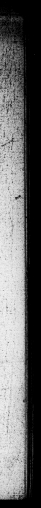

AL bagel”. "as 1 e * : * 1 5 i | * * 1 . n %* = 1 — an ** 4 * 5 | - —_ 28 7 * = * 72 vr. 57) * * 2 PIT — \ — ”"' * ** 1 2 '8 6 es LOS n ö 57 1 3 2. 8 N 4. F * — . 23 of Pho * * OTE X's "©, 8 EE NN e ache An Sp bw fy" Tree 7 which Auguſt —_ os | : 3 :gngd, Auguftas N mitrea 3 rer (7 — 4 + 5 Fins LA, [eamhi et, nt ni) ee . wil . crm. Ac non See 4 — 8 — pa goe v N,; ; ut. « * coats of Niall, 10 be cel mated en Rom. & ci Amiq 5 . t ſolennibus, 10 : fy vam Aug . fl Od. Viyſſem , o1 2008 * 3 r Js © difmal! an 2 oh e tr Raman prope. nd — bes. Elvis tes *p _ 15 quadan es AJ „ * tola argug 10 13 ETA macernc 8 ERP undano er Wie” monumentis chan Mufidium Lingonem F Ome Moribus functum. e e ſecrecum® pet 2 0 negavity niſi ut. inter Wniret Macro © preefeckf | "Ac per iſtiuſmodi N takes & toda, cauſa exit ic mIrtis : dato tamenz ug IT * "at Auſi di us 5 Rome. His dam“ putant, . ! a Ee dfundte? Fs Do, ö 24, doſe of poy«regMhaluic : proſpexit at; . 2 did he pay 15 to zidentem 17 J aan et” © ker . af. er Fratrein Tiberium? & 724. from kis 2555 tem, repente immi ſurprized h. 2 ſen ling 4 hn ſpatch him. He is Father in- la a to : ng his throat with GY e he all edge for , was, that the latter * zed iu on. his putti weather, but fiai be. 7 er, tos eis the city, if he 4 21 to be leſt in the veyage. or 2 pretended "ſmelt of an an Fe, wh 7775 ? bad taten to prevent: i Ale by by him 5 4 militum, intéremit. jtem ſocerum ad; candaſque novacul compulit : cauſatus 3 que, quad hic ingreſt — Fw turbatius 2 non elles ſe. cutus, ac ſpe occupangis urbem, ſi quid, ſibi per te Fo ſtates accideret, CAR ille antidotum ee TH ſi ad præcaveida venenz ſumptum : cum & Silaf impatientiam nauſez; 51255 let & moleſtiam navigate & Tiberius propter aſſiduam ngraveſcentem tuſſim meand of the trouble of - the veye; and Tiberius had only. made = a medicine for a cough- be dicamento uſus eſſet. Nam upon hin co nſtantiy, that grew wle Claudium patruum non 1 and worſe.” For”; as to hifi ſucteſſar in ludibrium reſer va vit. 1 Claudius, he only ſaved him to make _ ſpire: with... s. I IK: 24. Cum omnibus Cororibug 24. He lied in ebe practice inGals * conſuerudinem fe- ceſt with af his. Sifters, and at table plenoque convivio ſin* infra ſe viciſſim collo- riet dit im a e cabat Fon * r face Ac 2 W 01-16" 3e Hdarn bd => * * A das u ulunls ret md ng they- 1 JT —_ ee AT \ LF * N. 4, r | _— > kh * 75708 certam "Was only afraid of being ſea| | ' | | | [ |
